操作手册
本页面仅面向安装包用户，不涉及源码部署与开发环境搭建。
单开版特殊功能
- 在①处理选择要自动打开的小程序，自动重启也会重启选择的小程序
- ②处可以隐藏小程序，隐藏后将看不到小程序，但能可以正常挂着，沉浸式运行
- 注意在虚拟机中最好不要隐藏小程序，晚上挂机也不要隐藏，有可能重启会有问题
- 大前门是功能配置菜单，包括高级设置、好友屏蔽
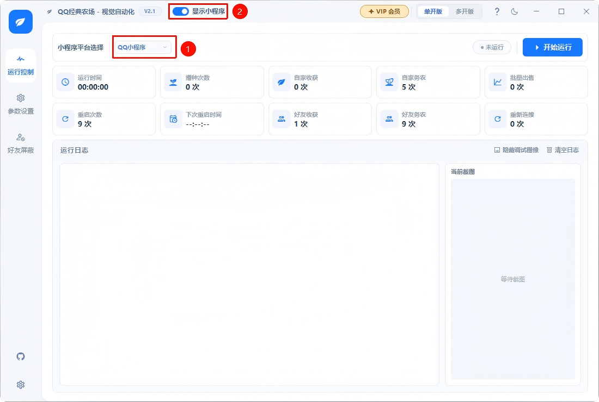
单开版只可以同时操作一个农场小程序，会自动启动选择的小程序(QQ、微信)
多开版特别功能
- ①处按钮加以增加实例，每个实例可以独立操作一个农场小程序
- ②处在”开始运行“前，要从这里选择对应的小程序窗口，前提是要先自己打开对应的小程序窗口，如果打开了看不到，点击③处的按钮刷新再选择
- ④处按钮可以定位已经选择的小程序，点击后会抖动小程序窗口，让你知道当前是哪个小程序
- ⑤处是每个实例下的独立功能配置菜单，包括高级设置、好友屏蔽
- ⑥处很重要，如果有多个QQ小程序，需要在这里填写QQ号，在重启小程序时，才会根据QQ号进行选择启动哪个小程序！如果不设置，周期重启小程序将失败！
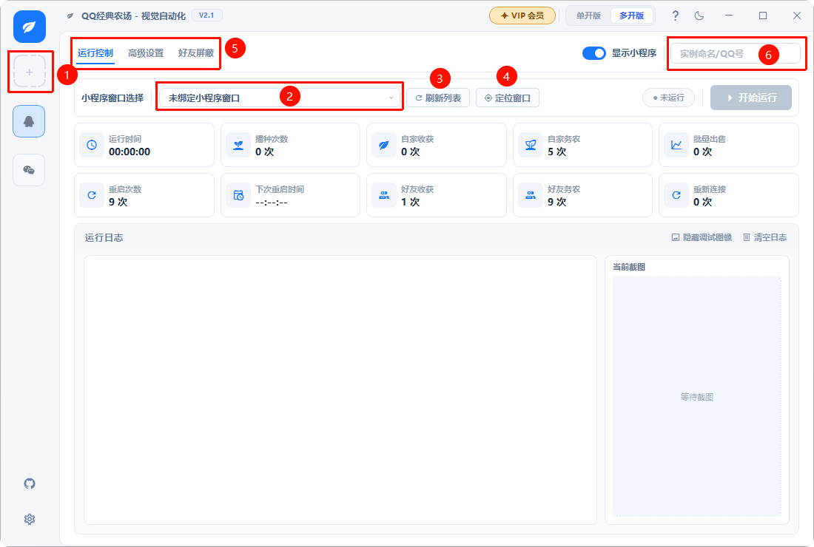
多开版可以同时操作多个农场小程序，无法自动启动小程序(QQ、微信)，需要手动多列表中选择小程序窗口，周期性重启会自动按钮选择的窗口进行重启。
通用功能
- 这是高级设置页面，右下角①处分别是保存生重置按钮，保存后要重启才生效。如果有时有异常可以重置来解决部分问题。
- 这是好友屏蔽页面，所谓好友屏蔽，就是可以把好友加入黑名单，在黑名单内，不再偷取帮忙该好友。添加后也要重启才生效。操作方式：先手动打开农场小程序的好友列表，然后点击”获取截图识别好友“，就会看到识别到的好友列表，选择好友，点击保存。
- ③处如果开启，会先种背包仓库的种子，但不会种已经锁定的种子
- ④处如果开启，会每日种植一定数量的白萝卜，直到刷满种植经验
- ⑤处如果开启，可以支持种植占用四块地的种子，但种植可能位置不好，最好还是自己种植好。
- ⑦处开启后，可以防止微信抢鼠标，开启后就可以安心工作了
- ⑧处开启后，会在好友家农场底部的好友列表进行检测是否帮忙，直到达到指定数量才回家
- ⑨处开启后，每天会自动进行捣乱，直到放完虫子、草
- ⑩处开启后，进入好友农场，检测到萝卜(白萝卜、胡萝卜)时，将不偷取，然后将该好友加入不偷取名单10分钟
- ⑪处开启后，会进行周期性重启，这样可能会解决部分农场不显示偷菜按钮的问题
- ⑫处设置周期重启的时间，会随机在这个时间期间重启
- ⑬处开启后，可以设置休息时间，休息时间不再偷菜或者退出小程序。
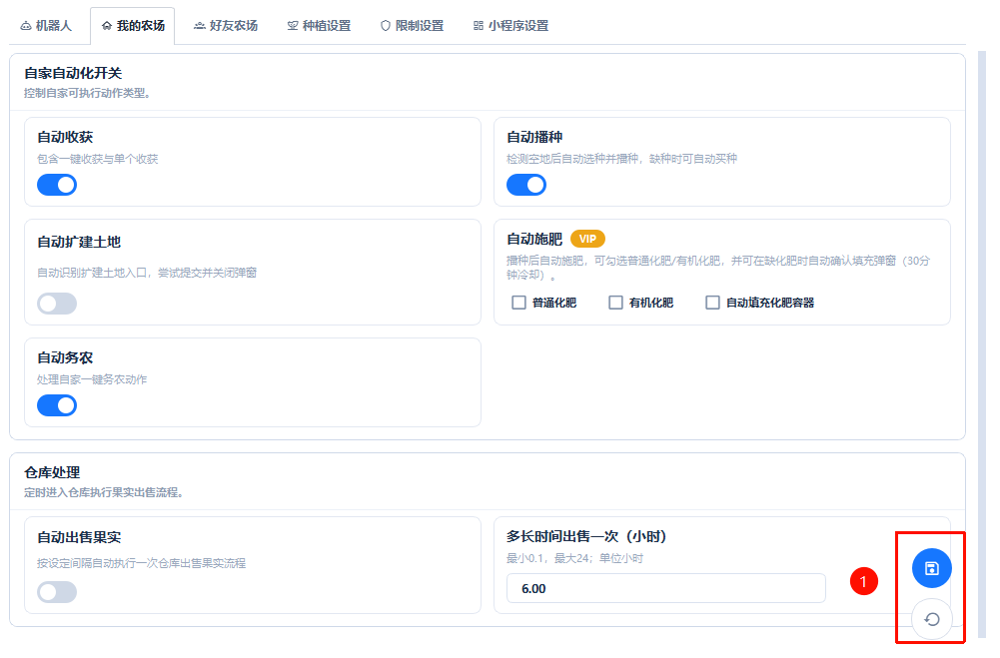
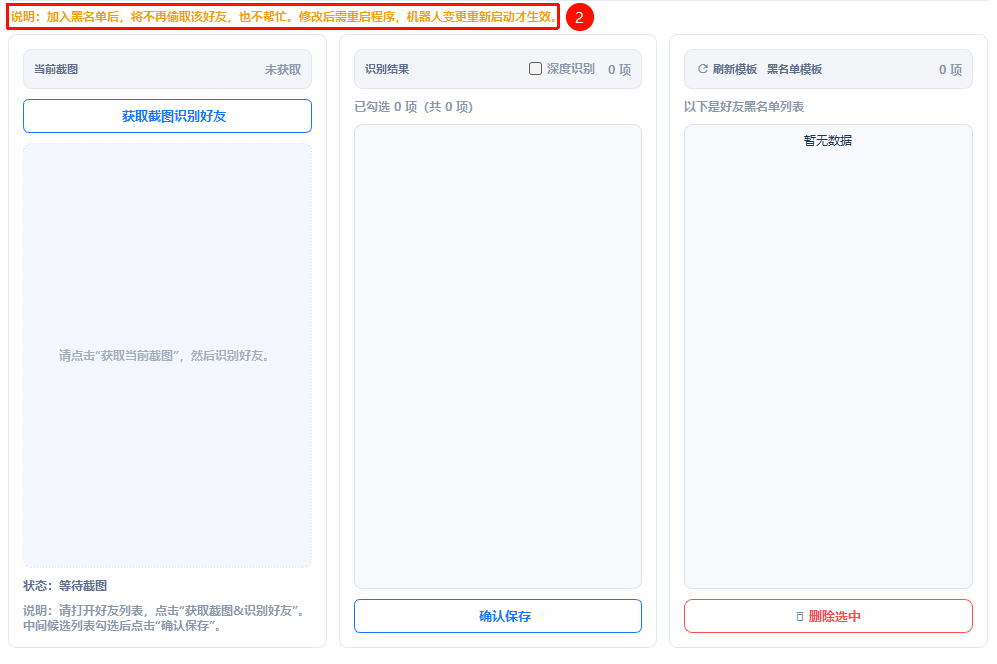
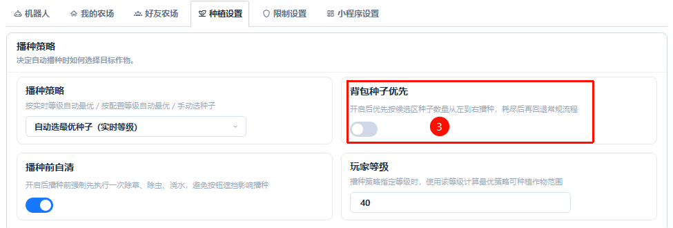
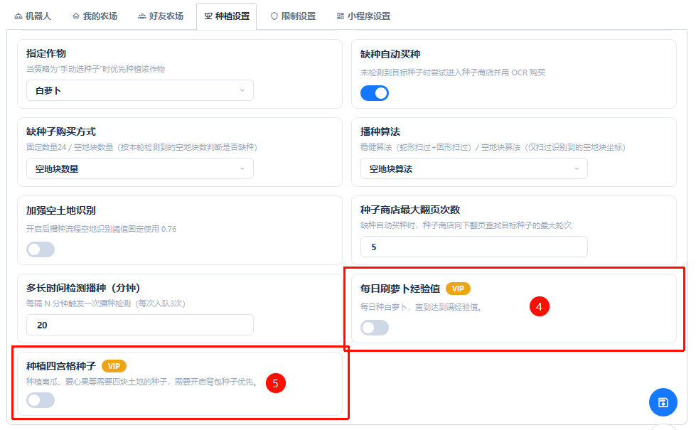
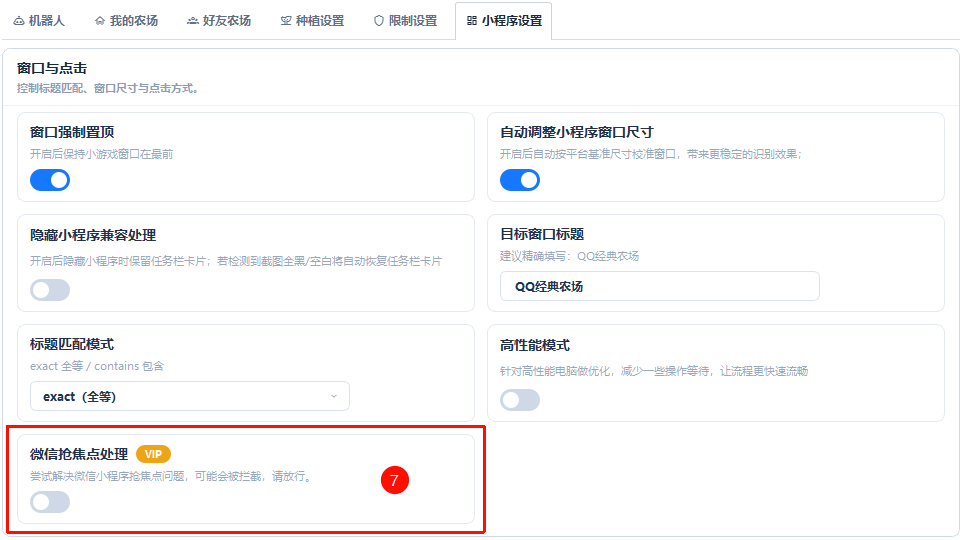
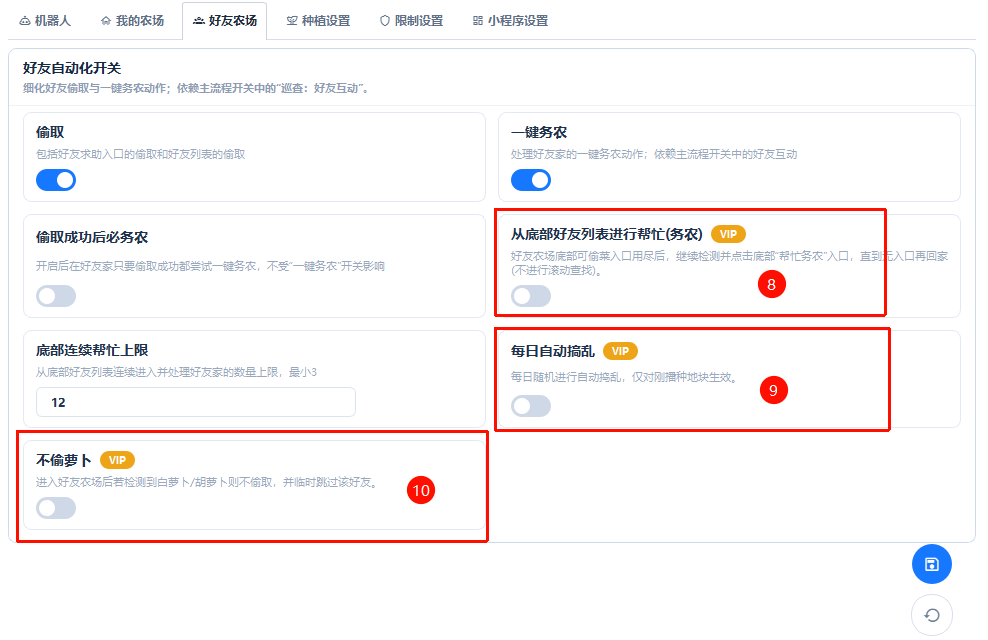
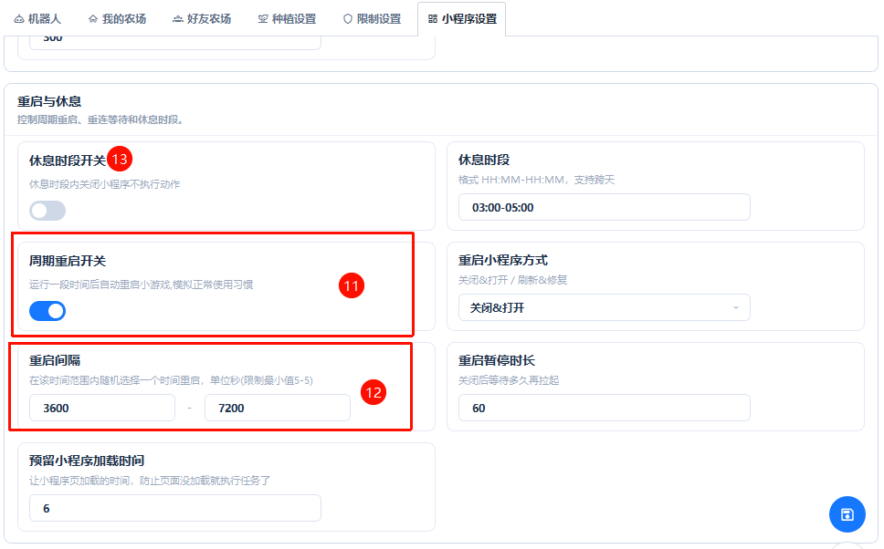
如何开通VIP
- ①处是开通VIP的按钮，点击后会打开开通VIP的弹窗页面
- ②处显示的是未激活VIP的状态
- ③处是购买卡密的入口，如果你没有卡密，可以点击去购买。
- ④处是输入卡密的框，输入后点击确认⑤处的”绑定卡密“即可激活VIP。
- ①处激活vip后会变成”VIP会员“，点击会出现激活信息弹窗
- ②处显示的是VIP的过期时间
- ③处是解绑操作，每个卡密只能解绑一个设置，要解绑才能在另一台设置重新绑定。
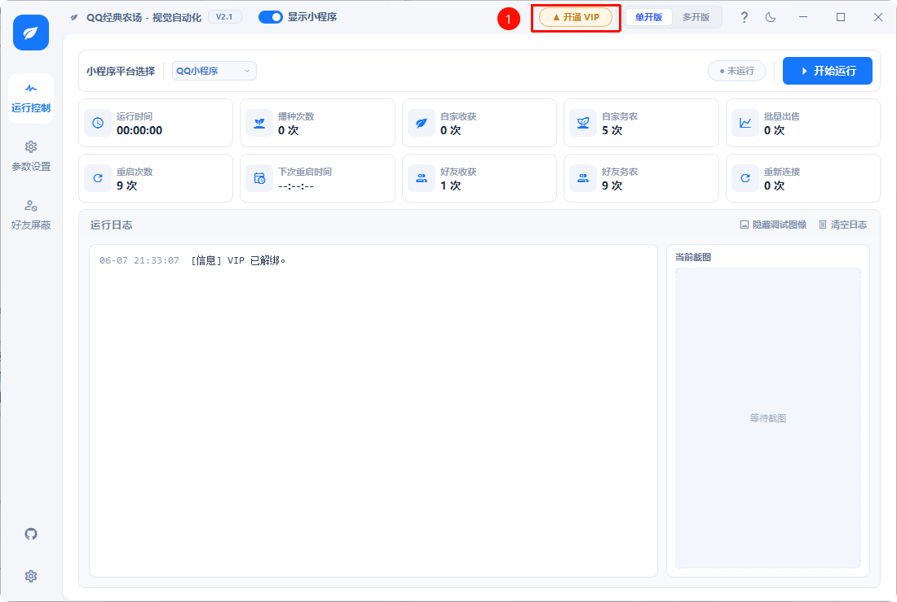
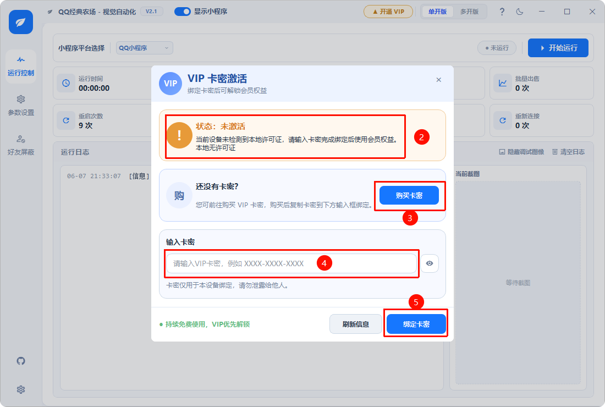
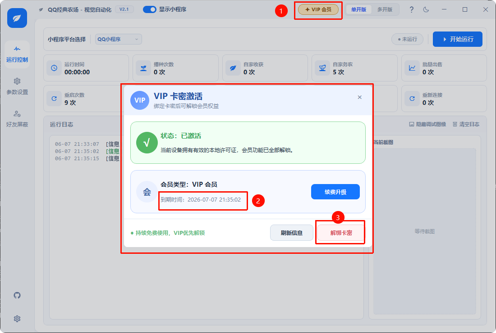
反馈渠道
- GitHub Issues：https://github.com/hacker-frok/qq-farm-bot-ai/issues
- 提交问题请附带：程序版本号、操作系统版本、问题截图 / 日志文件。
- 功能建议欢迎通过 Issues 提交，标注
feature request标签。